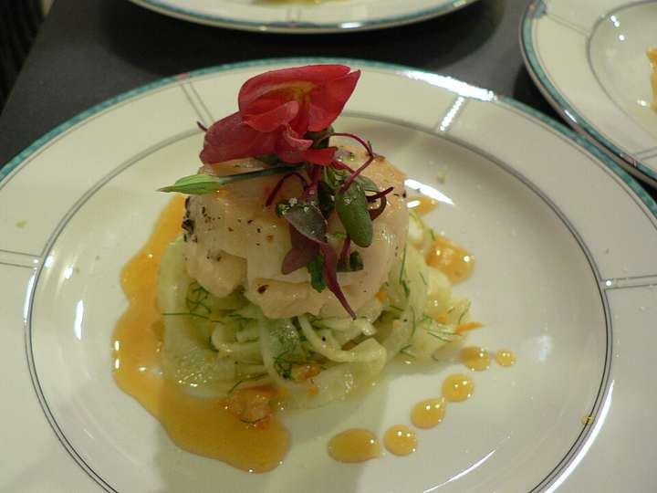
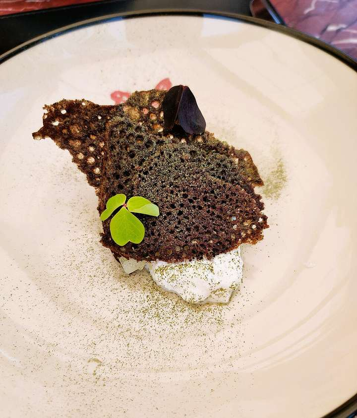
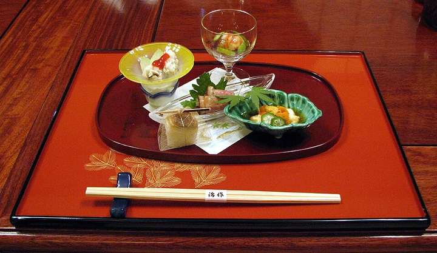
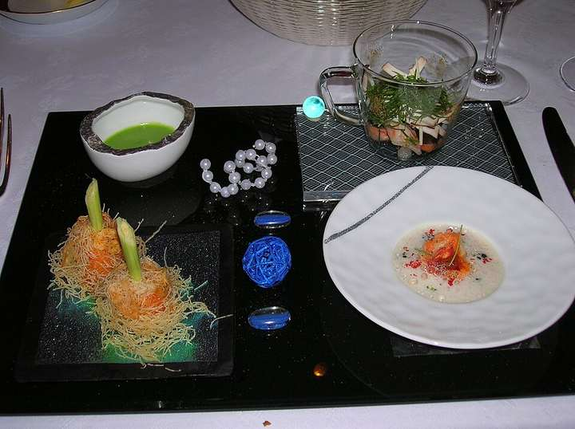
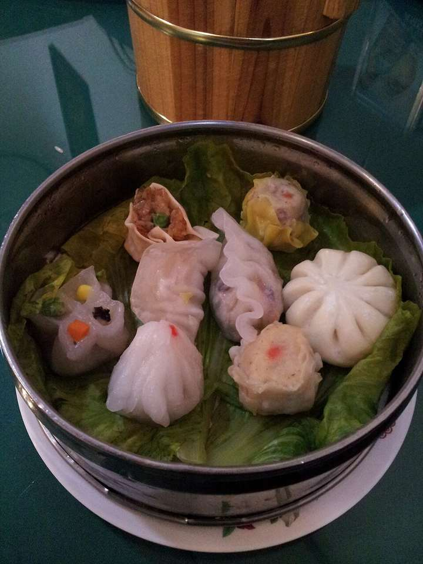
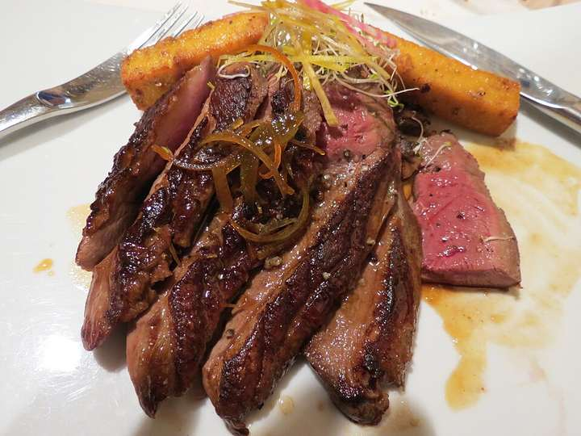
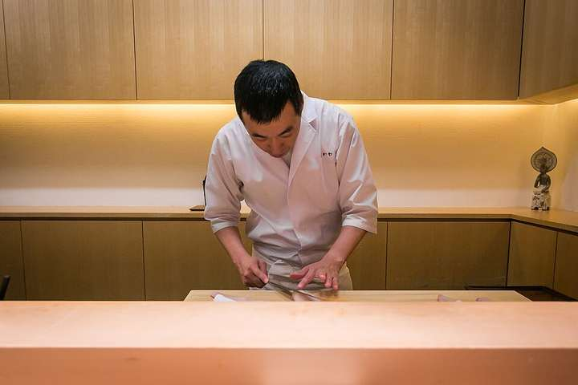
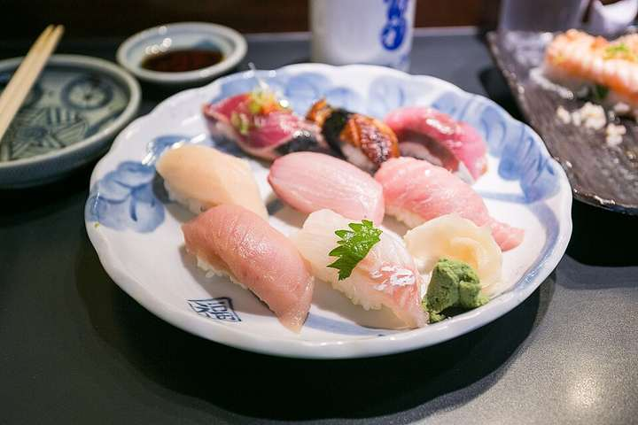
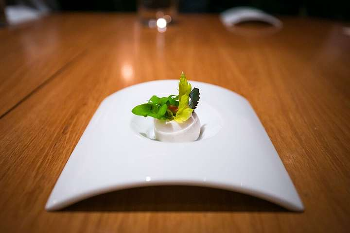
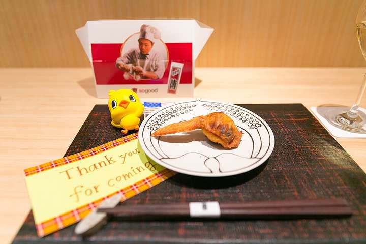

一席を見つける
01 — 1010店を掲載タップして詳細を読む

料理イメージフランス料理01★★★三つ星ロオジエ
L’OSIER
銀座の柳に名を借りた、現代フランス料理。
紹介・訪問前のご案内詳しく読む閉じる

料理イメージフランス料理銀座の柳にちなんだ名を持つフレンチ。日本各地の生産者とのつながりを大切にしながら、現代的なフランス料理を表現しています。
予約難易度・空席：要確認。

料理イメージフランス料理02★★★三つ星カンテサンス
Quintessence
素材、火入れ、味付け。その本質を追求する。
紹介・訪問前のご案内詳しく読む閉じる

料理イメージフランス料理岸田周三シェフが、素材・火入れ・味付けを追求するフレンチ。食材ごとの持ち味を引き出す調理を軸に、料理の本質を探っています。
予約難易度・空席：要確認。

料理イメージ日本料理03★★★三つ星日本料理 龍吟
RyuGin
包丁と炭火の技で、日本料理の可能性を探る。
紹介・訪問前のご案内詳しく読む閉じる

料理イメージ日本料理東京ミッドタウン日比谷にある日本料理店。山本征治シェフが、包丁や炭火の技術と食材への探究を通じて日本料理を表現します。
予約難易度・空席：要確認。

系列マカオ店の料理フランス料理04★★★三つ星ジョエル・ロブション
Joël Robuchon
恵比寿で受け継がれる、フランス料理の精神。
紹介・訪問前のご案内詳しく読む閉じる

系列マカオ店の料理フランス料理恵比寿ガーデンプレイスにあるガストロノミー。フランス料理の技術に日本の食材を取り入れ、ロブションの料理の精神を継承しています。
予約難易度・空席：要確認。

料理イメージ中国料理05★★★三つ星茶禅華
Sazenka
中国料理の技法に、日本の旬と感性を重ねて。
紹介・訪問前のご案内詳しく読む閉じる

料理イメージ中国料理川田智也シェフが、中国料理の技法と日本の感性を重ねる一軒。日本の旬の食材を生かし、中国料理に季節の表情を添えています。
予約難易度・空席：要確認。

料理イメージ鴨胸肉の一皿06★★★三つ星レフェルヴェソンス
L’Effervescence
生産者への敬意を、一皿と一服に込めて。
紹介・訪問前のご案内詳しく読む閉じる

料理イメージ鴨胸肉の一皿生江史伸シェフが、日本の食文化と生産者への敬意をコースに込めるフレンチ。野菜の一皿や食後の抹茶にも、その考え方が表れています。
予約難易度・空席：要確認。

実写真 · 過去の撮影カウンターの風景07★★★三つ星神楽坂 石かわ
Kagurazaka Ishikawa
自然体で引き出す素材の味と、調和のある一席。
紹介・訪問前のご案内詳しく読む閉じる

実写真 · 過去の撮影カウンターの風景石川秀樹氏が、自然体で素材を生かす料理を追求する日本料理店。味わいの調和や、炊きたての新潟の米にも心を配っています。
予約難易度・空席：要確認。

料理イメージ寿司08★★★三つ星青空
Harutaka
甘み、酸味、温度。銀座で味わう握りの流れ。
紹介・訪問前のご案内詳しく読む閉じる

料理イメージ寿司高橋青空氏が握る、銀座の寿司店。甘みや酸味、温度の調和を積み重ねる握りの流れが、ミシュランで紹介されています。
予約難易度・空席：要確認。

料理イメージ野菜の一皿09★★二つ星フロリレージュ
Florilège
植物性の食材から広がる、これからのフレンチ。
紹介・訪問前のご案内詳しく読む閉じる

料理イメージ野菜の一皿麻布台ヒルズで川手寛康シェフが手がけるフレンチ。植物性の食材を積極的に取り入れ、環境への配慮を料理に反映しています。
予約難易度・空席：要確認。

実写真 · 2014年傳の手羽先10★★二つ星傳
Den
遊び心あるおまかせと、笑顔で迎える日本料理。
紹介・訪問前のご案内詳しく読む閉じる

実写真 · 2014年傳の手羽先長谷川在佑氏が、遊び心あるおまかせ料理で迎える日本料理店。最中や手羽先などにも独自の発想を加え、食べる楽しさを届けます。
予約難易度・空席：要確認。
該当するお店がありません。
検索語や星数を変えてお探しください。